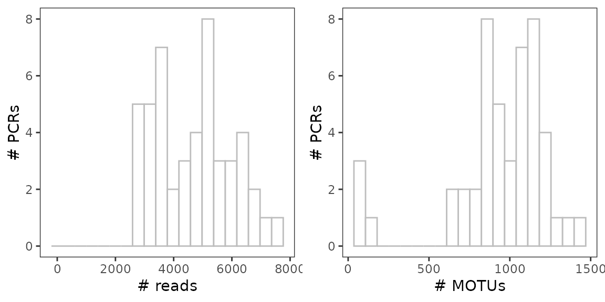
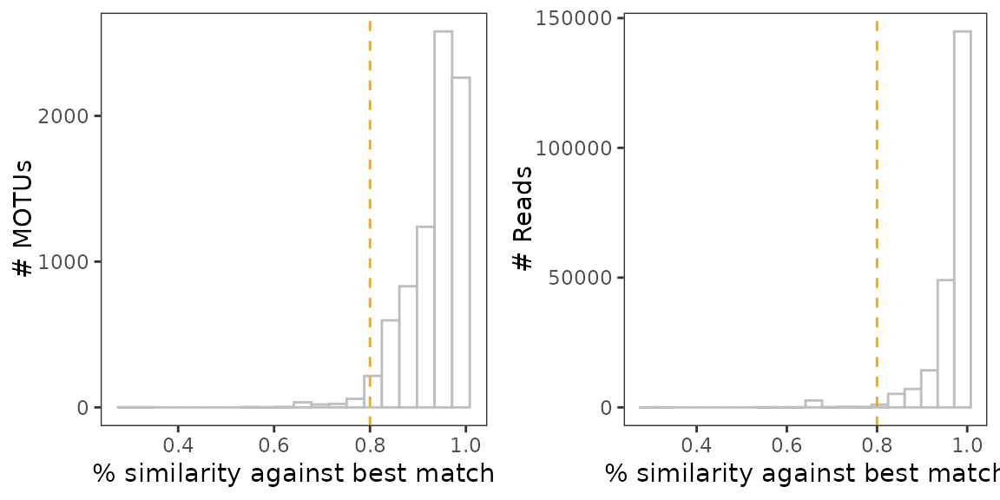
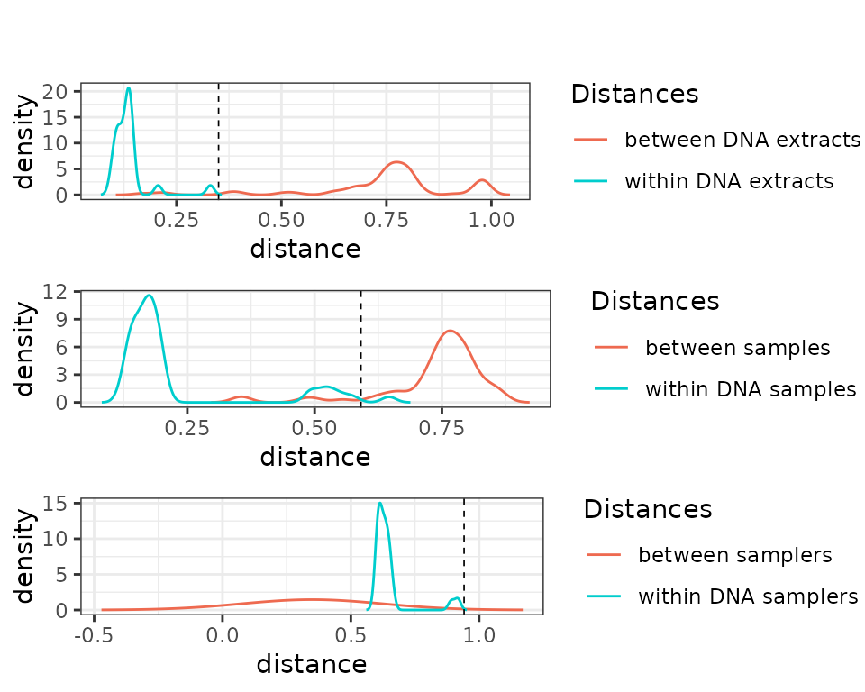

The karst dataset: sampler effect and technical reproducibility
2020-12-09
Source:vignettes/metabaRF-vignette_karst.Rmd
metabaRF-vignette_karst.RmdIntroduction
What if the sampler had an effect on DNA metabarcoding results? What is the extent of technical variability in DNA metabarcoding experiments? To further illustrate how one can further use metabaR to manipulate DNA metabarcoding data, we will address these questions with an new dataset, available in the metabaR companion data repository: https://github.com/metabaRfactory/metabaR_external_data.
The karst_euk dataset
The karst_euk dataset is an object of class metabarlist. The data were obtained from an environmental DNA (eDNA) metabarcoding experiment aiming to assess the turnover of soil eukaryotes in karsts ecosystems, often seen as “terrestrial islands”. In these ecosystems, dispersal is stronly limited by the singular topology of the area and genetic/ecological drifts are expected to be important processes locally.
A sampling was conducted across several kast mountains in Laos, as shown in the figure below. At each sampling site, two composite soil samples were made by two different samplers, one by Jean and one by Yvette. These composite samples are a mix of soil cores collected along a transect, as indicated in the figure. Each of these composite soils were then subjected to DNA extraction in duplicates, using an extracellular DNA extraction protocol (Taberlet et al. 2018). On each DNA extact, the v7 region of the 18S rRNA gene was then amplified by PCR in duplicates following previously described protocols (Zinger et al. 2019) and the Euka02 primer pair (Taberlet et al. 2018), and finally sequenced on an HiSeq Illumina platform with the paired-end technology. The retrieved data were then processed using the OBITools (Boyer et al. 2016) package, including denoising using the obiclean command. Each entry in this table is the equivalent of an ASV (amplicon sequence variant) or the representative sequence of a MOTU.
Given this set up, one expect strong differences in community composition across sites, caused by dispersal limitation, and - hopefully - minimal technical variation caused either by the extraction, PCR, and sampler.
Data import
The dataset can be imported in R as follows
dir <- tempdir()
url <- "https://raw.githubusercontent.com/metabaRfactory/metabaR_external_data/master/"
karst_euk_file <- "karst_euk.rds"
karst_euk_url = paste(url, karst_euk_file, sep="")
karst_euk_path <- file.path(dir, karst_euk_file)
download.file(karst_euk_url, karst_euk_path)
karst_euk <- readRDS(karst_euk_path)One can then use metabaR to display the summary statistics of the karst_euk dataset
library(metabaR)
summary_metabarlist(karst_euk)
#> $dataset_dimension
#> n_row n_col
#> reads 48 7870
#> motus 7870 23
#> pcrs 48 4
#> samples 12 5
#>
#> $dataset_statistics
#> nb_reads nb_motus avg_reads sd_reads avg_motus sd_motus
#> pcrs 224627 7870 4679.729 1340.161 933.1667 312.2533
#> samples 224627 7870 4679.729 1340.161 933.1667 312.2533The karst_euk dataset consists of 48 PCR products corresponding to 12 composite, biological samples in total. It does not contains experimental negative or positive controls, which is why the summary statistics are the same between pcrs and samples.
colnames(karst_euk$pcrs)
#> [1] "sample_id" "extraction_id" "type" "control_type"In karst_euk, the columns of the pcrs table correspond to:
-
"sample_id": a vector indicating the biological sample origin of each pcr (e.g. the sample name), here a composite sample collected by a given sampler.
-
"extraction_id": a vector indicating the extraction origin of each pcr (duplicate extraction for each sample).
-
"type": a vector containing only the value “sample”, as no controls are included in this experiment.
-
"control_type": a vector containing only the valueNA, as no controls are included in this experiment.
colnames(karst_euk$samples)
#> [1] "Site" "avg_N" "avg_E" "avg_alt" "sampler"The columns of the samples correspond to: - "Site": the sampling site.
- "avg_N": the latitude (decimal degrees) averaged across each sampling points of the same site.
- "avg_E": the longitude (decimal degrees), averaged as for latitudes. - "avg_alt": the elevation (m.a.s.l.), averaged as above.
- "sampler": the name of the sampler.
Diagnostic plots
Basic visualisation
As the dataset does not contain neither negative / positive controls, nor information on the pcr design (i.e. PCR plates and wells), several functions of the metabaR package cannot be used. Still, it enables handling this multi-layer data for more basic visualisation purposes. For example, the distribution of sequencing depth and number of MOTUs per samples can be visualized as follows
# Compute the number of reads per pcr
karst_euk$pcrs$nb_reads <- rowSums(karst_euk$reads)
# Compute the number of motus per pcr
karst_euk$pcrs$nb_motus <- rowSums(karst_euk$reads>0)
# load ggplot2
library(ggplot2)
# Plot the distribution of #reads
a <-
ggplot(karst_euk$pcrs, aes(x=nb_reads)) +
geom_histogram(color="grey", fill="white", bins=20) +
theme_bw() + expand_limits(x=0) +
theme(panel.grid = element_blank()) +
labs(x="# reads", y="# PCRs")
# Plot the distribution of #motus
b <-
ggplot(karst_euk$pcrs, aes(x=nb_motus)) +
geom_histogram(color="grey", fill="white", bins=20) +
theme_bw() +
theme(panel.grid = element_blank()) +
labs(x="# MOTUs", y="# PCRs")
# Combine plots into one
library(cowplot)
ggdraw() +
draw_plot(a, x=0, y=0, width = 0.5) +
draw_plot(b, x=0.5, y=0, width = 0.5)
This very basics plots already suggest that 3 pcrs have a very low diversity. They somehow behave like negative controls where some contaminants have been amplified.
Sequencing depth and coverage
Let’s construct the rarefaction curves with the hill_rarefaction function so that to obtain an estimate of \(^{q}D\) and \(Coverage\). nboot is low in the example below to limit the computing time.
#build rarefaction curves
karst_euk.raref <- hill_rarefaction(karst_euk, nboot = 20, nsteps = 10)
#draw by coloring the curves by sampler
# Define a vector containing the Material info for each pcrs
sampler <- karst_euk$samples$sampler[match(karst_euk$pcrs$sample_id,
rownames(karst_euk$samples))]
# Use of gghill_rarefaction requires a vector with named pcrs
sampler <- setNames(sampler,rownames(karst_euk$pcrs))
# Plot
p <- gghill_rarefaction(karst_euk.raref, group=sampler)
p + scale_fill_manual(values = c("orange","chartreuse")) +
scale_color_manual(values = c("orange","chartreuse")) +
labs(color="Sampler")At a first glance, it seems that Jean’s samples are more diverse in abundant/intermediate sequences than Yvette’s ones.
Flagging spurious MOTUs
Potential contaminants
This dataset does not include negative controls to enable detecting potential contaminants objectively. Still, we identified above some pcrs with very low diversity that may correspond to pcrs without DNA template and where reagents contaminants were amplified. Let’s see if these have a particular composition as compared to the other samples. This can be done by hijacking the contaslayer function as follows:
# set low-diversity pcrs as controls of e.g. pcrs
karst_euk$pcrs$control_type[which(karst_euk$pcrs$nb_motus<100)] <- "pcr"
karst_euk$pcrs$type[which(karst_euk$pcrs$nb_motus<100)] <- "control"
# run contaslayer
karst_euk <- contaslayer(karst_euk,
control_types = "pcr",
output_col = "not_a_pcr_conta")And then display some basic information on these potential contaminating sequences.
# print taxonomy of MOTUs most abundant in low-diversity samples
library(kableExtra)
dt <- karst_euk$motus[!karst_euk$motus$not_a_pcr_conta,
c("count","best_identity",
"scientific_name", "sequence")]
dt$best_identity <- round(dt$best_identity)
colnames(dt) <- c("total # reads", "similarity to ref DB", "taxon name", "sequence")
kable(dt[order(dt[,1], decreasing = TRUE)[1:10],], row.names=T) %>%
kable_styling(bootstrap_options= c("striped", "hover", "condensed"),
font_size = 8, full_width = F)| total # reads | similarity to ref DB | taxon name | sequence | |
|---|---|---|---|---|
| laos_18Seuka_00044 | 2752 | 1 | Sordariomycetes | ctcaaacttccatccgcttgagcggatagtccctctaagaagccagcgtactgccaaagcaatacgggctatttagcaggttaaggtctcgttcgttat |
| laos_18Seuka_00076 | 1768 | 1 | Liliopsida | ctcaaacttccgtggcctaaacggccatagtccctctaagaagctagctgcggagggatggctccgcatagctagttagcaggctgaggtctcgttcgttaa |
| laos_18Seuka_00048 | 738 | 1 | Pooideae | ctcaaacttccgtcgcctaaacggcgatagtccctctaagaagctagctgcggagggatggctccgcatagctagttagcaggctgaggtctcgttcgttaa |
| laos_18Seuka_00390 | 437 | 1 | Euclea crispa subsp. linearis | ctcaaacttccgtggcctgaaaggccatagtccctctaagaagctagctgcggagggtcgcctccgcatagctagttagcaggctgaggtctcgttcgttaa |
| laos_18Seuka_00379 | 400 | 1 | Brassicaceae | ctcaaacttccttggcctaaacggccatagtccctctaagaagccggccgtgaagggatgcctccacgtagctagttagcaggctgaggtctcgttcgttaa |
| laos_18Seuka_00098 | 266 | 1 | Euplotida | ctcaaacttccttgtggttgcacacaaagtccctctaagaagtacataccggaaaaccggctgactatttagcaggctaaggtctcgttcgttaa |
| laos_18Seuka_00366 | 248 | 1 | Basidiomycota | ctcaaacttccgtcagctaaacgctgacagtccctctaagaagccagcgaccagcaaaagccggccgggctatttagcaggttaaggtctcgttcgttat |
| laos_18Seuka_00329 | 220 | 1 | Diplosoma gumavirens | ctcaaacttccattggctggaagccaatagtccctctaagaagccagccaccaaccatagtcgatggggctatttagcaggttaaggtctcgttcgttat |
| laos_18Seuka_00866 | 176 | 1 | Fungi | ctcaaacttccttcggcttgagccgaaagtccctctaagaagccagcgtactgccaaagcaatacgggctatttagcaggttaaggtctcgttcgttat |
| laos_18Seuka_01002 | 174 | 1 | Vorticella campanula | ctcaaacttccatgtgattacatcacatagtccctctaagaagtgattcaaatttgaaataagaacactagttagcaggttaaggtctcgttcgttaa |
From the taxonomy of these potential contaminant sequences, it is difficult to say whether these sequences are actual contaminants. One way to further investigate this is to see how these sequences are distributed across pcrs.
library(reshape2)
tmp <- melt(karst_euk$reads[,!karst_euk$motus$not_a_pcr_conta])
ggplot(tmp, aes(x=Var2, y=Var1, size=ifelse(value==0, NA, value))) +
geom_point() + labs(size = "# reads") +
theme(axis.text.x = element_text(angle=45, hjust = 1))
The most abundant contaminant identified in the table above is present in all samples, and is therefore most likely a contaminant indeed. In addition other potential contaminant sequences are present in 7-8 successive samples, which are likely in the same column of a PCR plate. These features strongly suggest that these sequences are indeed artefactual and should be excluded from the dataset.
Flagging spurious MOTUs and non-target MOTUs
Non-target MOTUs cannot be detected in this particular dataset, because the taxonomic assignments have been made using a reference database that only contains eukaryotic sequences.
One can, however, still identify MOTUs whose sequence is too dissimilar from references, by drawing the distribution of MOTU similarity scores, weighted and unweighted by their relative abundance.
# Plot the unweighted distribution of MOTUs similarity scores
a <-
ggplot(karst_euk$motus, aes(x=best_identity)) +
geom_histogram(color="grey", fill="white", bins=20) +
geom_vline(xintercept = 0.8, col="orange", lty=2) +
theme_bw() +
theme(panel.grid = element_blank()) +
labs(x="% similarity against best match", y="# MOTUs")
# Same for the weighted distribution
b <-
ggplot(karst_euk$motus,
aes(x=best_identity, y = ..count.., weight = count)) +
geom_histogram(color="grey", fill="white", bins=20) +
geom_vline(xintercept = 0.8, col="orange", lty=2) +
theme_bw() +
theme(panel.grid = element_blank()) +
labs(x="% similarity against best match", y="# Reads")
# Combine plots into one
library(cowplot)
ggdraw() +
draw_plot(a, x=0, y=0, width = 0.5) +
draw_plot(b, x=0.5, y=0, width = 0.5)
As in the soil_euk dataset, we may consider any MOTU as degraded sequences if its sequence similarity is < 80% against its best match in the reference database.
# Flag not degraded (TRUE) vs. potentially degraded sequences (FALSE)
karst_euk$motus$not_degraded <-
ifelse(karst_euk$motus$best_identity < 0.8, F, T)
# Proportion of each of these over total number of MOTUs
table(karst_euk$motus$not_degraded) / nrow(karst_euk$motus)
#>
#> FALSE TRUE
#> 0.02210928 0.97789072
# Intersection with other flags
table(karst_euk$motus$not_a_pcr_conta,
karst_euk$motus$not_degraded)
#>
#> FALSE TRUE
#> FALSE 0 40
#> TRUE 174 7656No intersection is found between degraded MOTUs and potential contaminants.
Assessing signal reproducibility
Here, one can assess the signal reproducibility at different levels:
- the DNA extract level
- the composite sample level
- the site level.
Because the functions in metabaR rely on
# DNA extraction
comp1 = pcr_within_between(karst_euk, replicates = karst_euk$pcrs$extraction_id)
a <-
check_pcr_thresh(comp1) +
scale_color_manual(labels = c("between DNA extracts", "within DNA extracts"),
values = c("coral2", "cyan3"))
# composite sample
comp2 = pcr_within_between(karst_euk, replicates = karst_euk$pcrs$sample_id)
b <-
check_pcr_thresh(comp2) +
scale_color_manual(labels = c("between samples", "within DNA samples"),
values = c("coral2", "cyan3"))
# sampler
karst_euk$pcrs$sampler_id <- karst_euk$samples$sampler[match(karst_euk$pcrs$sample_id,
rownames(karst_euk$samples))]
comp3 = pcr_within_between(karst_euk, replicates = karst_euk$pcrs$sampler_id)
comp3$bar_dist <- rep(comp3$bar_dist, 2) # trick to plot a density from 1 value
c <-
check_pcr_thresh(comp3) +
scale_color_manual(labels = c("between samplers", "within DNA samplers"),
values = c("coral2", "cyan3"))
library(cowplot)
ggdraw() +
draw_plot(a, x=0, y=0.6, height = 0.3) +
draw_plot(b, x=0, y=0.3, height = 0.3) +
draw_plot(c, x=0, y=0, height = 0.3)
These plots suggest that the PCR and extraction reproducibility is high. By contrast, reproducibility per sample is very low, which means that biological difference between samples are stronger than a potential effect introduced by the sampler per se.
Let’s verify this with an ordination visualisation by hijacking the check_pcr_repl function:
# Distinguish between pcrs obtained from the different sampling sites
mds = check_pcr_repl(karst_euk,
# display sites with different colors
groups = karst_euk$samples$Site[match(karst_euk$pcrs$sample_id,
rownames(karst_euk$samples))],
# use funcpcr to differentiate samplers instead of good vs. failed pcrs.
funcpcr = karst_euk$pcrs$sampler_id == "Yvette")
mds +
labs(color = "Sites", shape="Sampler") +
scale_shape(labels=c("Jean", "Yvette"))
The variability across sites is hence far larger than between samplers and technical replicates. But the sampler effect is not totally negligible.
References
Boyer, F., C. Mercier, A. Bonin, Y. Le Bras, P. Taberlet, and E. Coissac. 2016. “OBITools : A Unix- Inspired Software Package for Dna Metabarcoding.” Molecular Ecology Resources 16 (1): 176–82.
Taberlet, Pierre, Aurélie Bonin, Lucie Zinger, and Eric Coissac. 2018. Environmental Dna: For Biodiversity Research and Monitoring. Oxford University Press.
Zinger, Lucie, Pierre Taberlet, Heidy Schimann, Aurélie Bonin, Frédéric Boyer, Marta De Barba, Philippe Gaucher, et al. 2019. “Body Size Determines Soil Community Assembly in a Tropical Forest.” Molecular Ecology 28 (3). Wiley Online Library: 528–43.